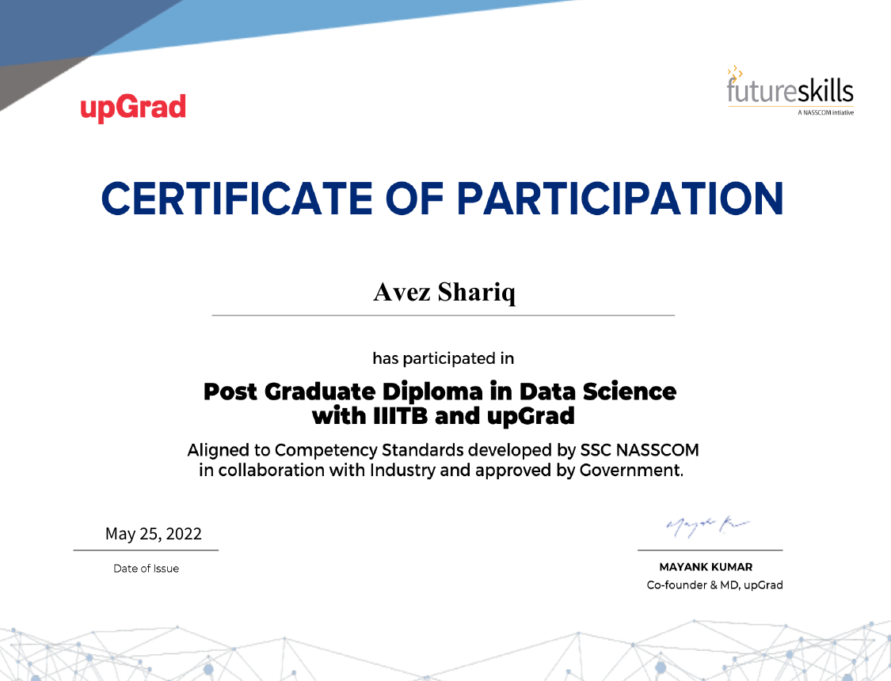

The journey of a thousand miles begins with one step
My journey began at IIIT-Bangalore, where I ignited my passion for AI. Fueling this passion, I completed the program, earned an extra Kaggle certification, and dove into projects to gain practical experience. Contributing to Free and Open Source Software (FOSS) is a future goal, but for now, I'm constantly seeking ways to hone my skills. Whether through these certifications or my project portfolio, you'll see my dedication to continuous learning
Post Graduate Diploma in Data Science

Python Certification from Kaggle
